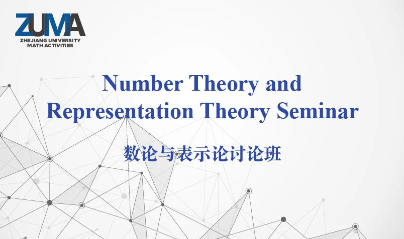

The seminar will meet at 4:00–5:00 pm, Wednesday (almost) every week during semesters, in the lecture room of IASM (East 7 Bldg, Zijingang Campus), unless otherwise noted. The seminar is organized by the NT&RT Group at Zhejiang University.
Here are the past talks.
Click on a title to reveal its abstract.
Schedule (2025–26 Spring)
Mar 4
- Speaker: Yinchong Song 宋寅翀 (Peking University 北京大学)
- Title:
Height theory, Arakelov geometry and Beilinson–Bloch heights
- In this talk we first give an introduction to height theories and Arakelov geometry, including heights on elliptic curves, various ways to define a height function, and some important theorems and applications of Arakelov geometry. After that we focus on Yuan–Zhang's adelic line bundles and Beilinson–Bloch heights. In the end we will discuss my recent work about Beilinson–Bloch heights.
Mar 11
- Speaker: Ziqi Guo 郭子棋 (Peking University 北京大学)
- Title:
Modular heights of unitary Shimura varieties
- The goal of our work is to prove a formula expressing the modular height of a unitary Shimura variety over a CM number field in terms of the logarithm derivative of the Hecke L-function associated with the CM extension. In a more specific term, we will introduce a global canonical integral model of such a unitary Shimura variety, and compute the arithmetic top self-intersection number of a canonical arithmetic line bundle with Hermitian metric on such integral model. At the same time, we also delve into a thorough investigation of the arithmetic generating series of divisors on unitary Shimura varieties. Therefore, we will also obtain the so-called "arithmetic Siegel–Weil formula" in our setting.
Mar 18 (3:30–4:30pm!)
- Speaker: Jiajun Ma 马家骏 (Xiamen University 厦门大学)
- Title:
Local theta correspondence and endo-parameters
- The theory of semisimple characters and endo-parameters provides a powerful framework for studying smooth representations of p-adic classical groups. Initiated by Bushnell, Kutzko, and Henniart for general linear groups, this theory was later extended to classical groups through the work of Kurinczuk, Skodlerack, and Stevens. Endo-parameters can be viewed as restrictions of Langlands parameters to the wild inertial group, and they provide a decomposition of the category of smooth representations into subcategories that are coarser than the classical Bernstein decomposition. In this talk, I will present the results on a theta correspondence for semisimple characters and show that endo-parameters are compatible with theta correspondence. Furthermore, I will present a reduction-to-depth-zero theorem for theta correspondence. This is joint work with Loke, Stevens, and Trias.
Mar 25
- Speaker: Yuta Takaya 髙谷悠太 (University of Tyoko 東京大学)
- Title:
Categorification of local relative Langlands duality
- The relation between period integrals and L-functions, studied since the work of Hecke and Tate, has recently been reformulated by Ben-Zvi–Sakellaridis–Venkatesh as relative Langlands duality. In this talk, I will present a version of this duality, the normalized period conjecture, in the framework of the categorical local Langlands correspondence à la Fargues-Scholze. I will describe computations for the Iwasawa–Tate and Hecke periods that support this conjecture, and discuss how it leads to a relation between distinguished representations and distinguished L-parameters. This talk is based on joint work with Milton Lin.
Apr 1
- Speaker: Wenxuan Qi 齐文轩 (Peking University 北京大学)
- Title:
Kudla's modularity theorem and higher Chow group version of theta lifts
- Kudla has made a conjecture that a certein generating series with coefficients in Chow group will be a Siegel modular form. A key ingredient in proving this modularity conjecture is Borcherds' work on singular theta lifts. In this talk, we first intruduce Borcherds' work, and use the language of our framework to give the proof of Borcherds to the modularity theorem. Then we give a generalization of Borcherds' work to a higher Chow group version: we hope to construct a similar generating series with values in higher Chow groups. This is an ongoing series of joint works with Haocheng Fan, Linli Shi, Peihang Wu, Liang Xiao and Yichao Zhang.
Apr 8
- Speaker: Haocheng Fan 范浩程 (Peking University 北京大学)
- Title:
Coherent cohomological dimension of Siegel modular varieties and the modularity of formal Siegel modular forms
- In this talk, we provide an upper bound of the coherent cohomological dimension of the Siegel modular variety. As a corollary, we show that the boundary of the compactified Siegel modular variety satisfies the Grothendieck–Lefschetz condition. This implies, in particular, that every formal Siegel modular forms of genus at least 2 and cogenus 1 is classical.
Apr 22
- Speaker: Ian Gleason (National University of Singapore 新加坡国立大学)
- Title:
On the schematic and analytic constructions of the local Langlands category
- We prove a folklore conjecture relating two geometrizations of the automorphic side of the local Langlands category (with torsion coefficients). The emphasis of this talk will be in explaining the overall strategy to construct the functor that compares the two categories.
Apr 29
May 6
- Speaker: David Hansen (National University of Singapore 新加坡国立大学)
- Title:
TBA
May 20
- Speaker: Wei He 何伟 (Xi'an Jiaotong University 西安交通大学)
- Title:
TBA
May 27 (Two talks, starting at 15:00!)
- Speaker: Mattia Cavicchi (Université Bourgogne Europe)
- Title:
(15:00–16:00) TBA
Jun 3
Jun 11 (Thursday!)
Jun 17
- Speaker: Zhiyou Wu 吴峙佑 (Chinese Academy of Sciences 中国科学院)
- Title:
TBA
Jun 24